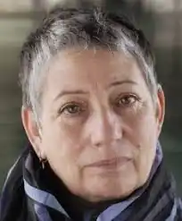
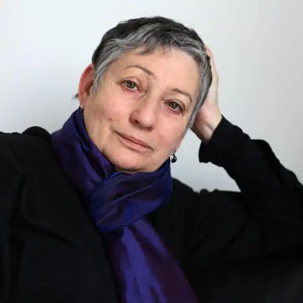
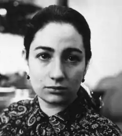

21 лютого 1943 року на Уралі у селі Давлеканово недалеко від Уфи в сім'ї евакуйованих москвичів Улицких народилася дівчинка, яку назвали Людмилою. Ніхто і подумати не міг, що пройде багато років, і вона стане відомою письменницею. Після закінчення війни сім'я Улицких повернулася до Москви. Тут Людмила закінчила школу і вступила до МГУ на біологічний факультет. Роки навчання в університеті наклали глибокий відбиток на її подальшу діяльність.
Генетики навчили Людмилу думати, дивитися і спостерігати, а університетський учитель Улицької видатний генетик Володимир Павлович Эфраимсон був для юної студентки прикладом бездоганної моральності. Після закінчення вузу в 1968 році Людмила Улицька стала працювати в Інституті загальної генетики АН СРСР. Через два роки в 1970 році Людмила Євгенівна йде з роботи.
Причиною звільнення стала передрук самвидаву. Як згадує сама Улицька, в ті роки багатьох карали за читання та передрук самвидаву. Деякий час Улицька не працювала, а коли спробувала повернутися до наукової роботи, то зрозуміла, що професія від неї пішла. У пошуках роботи Людмилі Євгенівні допомогла подруга, яка працювала художником Єврейського театру. Вона познайомила Улицьку з Шерлингом, відомим діячем мистецтва, який запропонував Людмилі Євгенівні роботу в Єврейському театрі. Робота полягала в написанні інсценувань, нарисів, дитячих п'єс, рецензій. Крім того, Улицька займалася перекладом віршів з монгольської мови. Пропрацювавши в театрі три роки, Улицька всерйоз зайнялася літературною творчістю. Перша її книга побачила світ у 1993, коли Людмилі Євгенівні було вже за 50. Тяга до творчості була закладена в Улицької генетично. Її репресований дід свого часу опублікував книги по демографії і по теорії музики. Батько Людмили Євгенівни написав книгу про автомобіль і його експлуатації, а її прабабуся по материнській лінії складала на ідиші вірші. Людмила Євгенівна та сама досить успішно писала вірші, але окремим збірником їх не публікувала. Свої найкращі поетичні рядки вона надала головній героїні свого роману "Медея і її діти". Цей роман приніс Улицької в 1997 році Букерівську премію і широку популярність. Творчий успіх, Людмила Улицька сьогодні Перша книга Людмили Улицької "Бідні родичі" була видана французькою мовою у Франції, а публікації перших оповідань Людмили Євгенівни стали з'являтися в журналах наприкінці вісімдесятих. На початку дев'яностих за її сценаріями знімають фільми "Сестрички Ліберті" режисера Ст. Грамматикова і "Жінка для всіх" режисера А. Матешко. У цей же період в журналі "Новий світ" виходить повість "Сонечка", яку у Франції назвали найкращою перекладною книжкою року. Ця повість принесла Улицької французьку премію Медічі. У 1998 році повість "Сонечка" здобуває звання лауреата італійської літературної премії Джузеппе Ачерби. Людмила Улицька: "Я знаю п'ять поколінь предків" Лауреат премії "Російський Букер" — роман "Казус Кукоцкого", був екранізований режисером Ю. Грымовым в 2001 році, а в 2006 році цій книзі італійську премію присуджують Пенне. У 2006 році виходить роман Улицької "Даніель Штайн, перекладач". Цікаво, що написання цього роману почалося з банального перекладу з англійської мови документальної книги американського професора-соціолога про Даніеле Руфайзене, з яким письменниця була особисто знайома. Цьому роману про католицького священика в 2007 році була присуджена премія "Велика книга". У 2009 році Людмила Улицька увійшла в список претендентів на міжнародну Букерівську премію 2009 року. Здобувачами цієї премії були відомі письменники: Едгар Доктороу, Маріо Варгас Льоса, а також, лауреат Нобелівської премії Видъядхар Найпол. Людмила Євгенівна займається не тільки творчістю. Фонд Людмили Улицької, організований в 2007 році, реалізує дитячий книжковий проект "Інший, інші, про інших" і надає благодійну допомогу бібліотекам. Людмила Улицька про таємниці слов'янської душі Людмила Євгенівна вважає, що вона завжди запізнюється. Так пихкаючи і відсапуючись, вона намагається крокувати з часом в ногу. У 45 років вона навчилася водити машину, в 50 стала письменницею, тільки в 55 навчилася володіти комп'ютером. Улицька вважає, що вона могла б і не стати відомою письменницею, якщо б її не звільнили з роботи. Її твори, написані для своїх, для вузького кола читачів, стали популярними і придбали широке коло своєї аудиторії. Улицька стала найуспішнішою, найбільш читаною і модною письменницею. Її твори читають не тільки в Росії. Вони перекладені більш ніж на 30 мов. Людмила Євгенівна, незважаючи на славу, вважає себе людиною, якому незатишно сидіти під софітами, вона завжди готова поступитися перше місце. А що стосується її професії, то вона і зараз готова з цікавістю освоювати нові куточки. Особисте життя Людмили Улицької Людмила Улицька тричі виходила заміж. Перший її шлюб був студентським і нетривалим. З першим чоловіком студентом фізтеху Юрієм Тайцем вони жили в окремій квартирі, і весь час кожен з молодого подружжя бурхливо відстоював свою першість і перевагу. Зі своїм другим чоловіком Улицька прожила 10 років. У цьому шлюбі вона народила двох синів. Її чоловік був у той час процвітаючий вчений, а Людмила Євгенівна в ту пору була домогосподаркою. Поступово дружини стали чужими і розлучилися. Пошуки роботи після розлучення і привели Улицьку в Єврейський театр, де й зародилася її письменницька кар'єра. Третій чоловік Улицької — скульптор Андрій Красулин. Сини Людмили Євгенівни подорослішали. Один з них став джазовим музикантом, інший займається бізнесом. У письменниці є два онуки, з'явилася і внучка, так як у дружини молодшого сина є восьмирічна дівчинка. Бабуся Людмила Євгенівна всякий раз заново спостерігає і допомагає онукам відкривати таємниці світу. Спілкуючись з онуками, Улицька надолужує згаяний час. Може тому письменниця планує зробити ще чотири книги з "Дитячого проекту". Ці книги про взаємоповагу та доброту, про те, що завжди потрібно доброзичливо ставитися до іншої людини.